~Mirroring In Object Mode~
2/17/2025
Method Number 2, the Best Way to Mirror without Using a Modifier
Move the Ear into place on the Head
Change the Transform Pivot Point to 3D Cursor
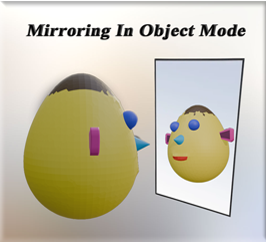
Yes, we could mirror the object by going into the modifying panel and adding the mirror modifier to it, but here I just want to do a simple mirror without going into that realm just quite yet. And mirroring is something that should be done in Object mode, anyways. And since Object mode is what I am starting out with, then I will demonstrate what can be done with mirroring in this mode alone.
Method Number One
Here we have a simple little creature. He has an ear that needs to be mirrored on the head.
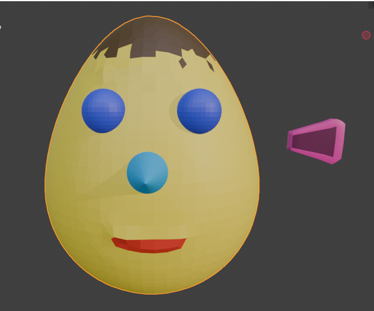
Object Mode
Make sure you are in object mode
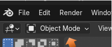
Select the Object
Select the object that you want to work with. In our case it is the ear.
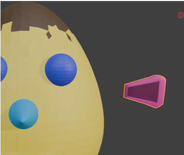
Let me first demonstrate the wrong way to do things
If you were to just duplicate this ear, by hitting shift-D, and then hit the X button, you will find that you duplicated it, but it is in the same direction as the other ear.
Hmmmm… so, that’s not right.
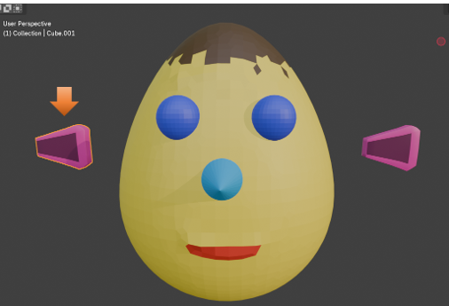
Even if we rotate it -90° on the Z axis, it still will not be right
Warning, if you try to do this move, and the ear disappears, you more than likely made your changes in the location section, and not in the rotation section, and you just sent the ear flying off the screen. Undo and redo your changes in the rotation section of the Object property panel on the right side of the viewport.
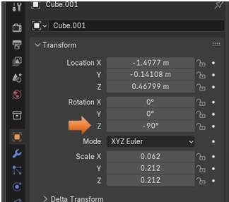
And once again, we have that Hmmmm… that’s not right moment, with this rotation of -90°.
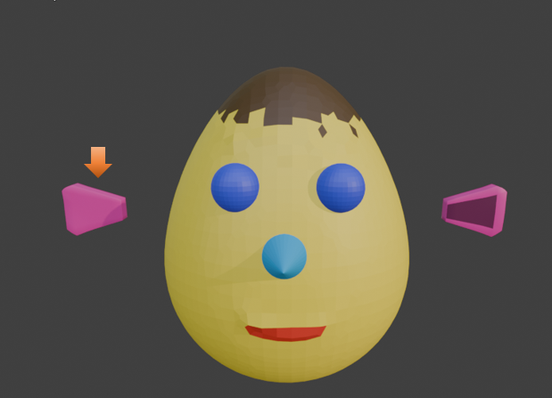
Mirroring the Object
Make sure you still have the ear that you duplicated still selected, and if you turned it around backwards make sure you undo that move, and go back to where you had duplicated the ear. Also make sure that you have not gone so far back that you don’t still have 2 ears, in order to do the mirror, we need to do it on the duplicated ear.
The hot key to mirror, is the ctrl key with the letter M on the Keyboard and then Hit the letter X to mirror the ear in the X direction.
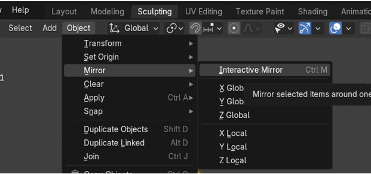
Now you will see that your ear has been mirrored correctly in the viewport.
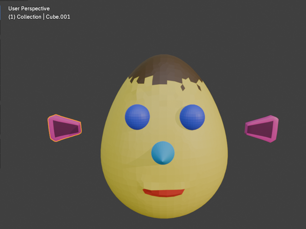
Move the Ears Back in Place
Now just use the viewport and move your ears back into place.
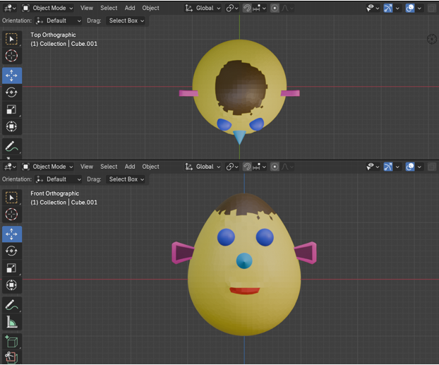
Method Number 2, the Best Way to Mirror without Using a Modifier
The above method is one way in which you can mirror, but it might not be the best one. There is actually a better way to mirror the ear, if you do not want to resort to using a mirror modifier to do it.
Again, you want to make sure you are in Object mode.
Go to Object Mode
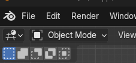
By Default, you will have the Transform Pivot point on Median Point, you will notice that the move tool cursor when in this mode is situated on the ear itself or the object, and that looks like this:
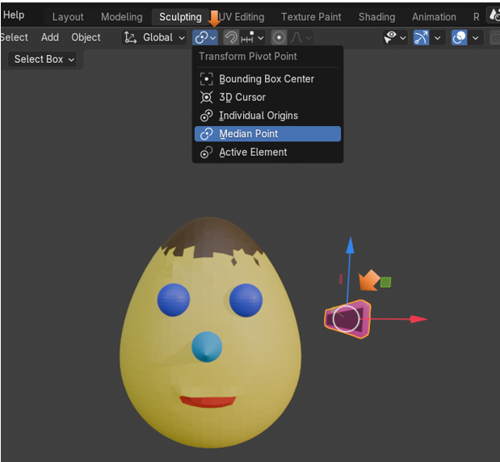
But before we make a change to that Pivot Point, lets move the ear in place, where we want it to be on this silly character’s head.
Move the Ear into place on the Head
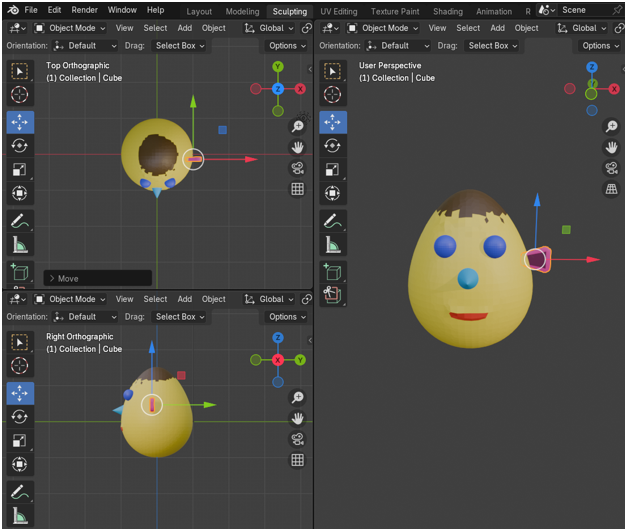
In order to mirror the object correctly the Pivot point must be centered. So…
Change the Transform Pivot Point to 3D Cursor
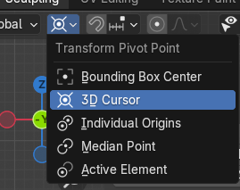
Notice, when you make this change that the cursor will jump to the center of the object that we will use to mirror the ear. You only need the ear selected to make the cursor change, you do not need to shift select the head.
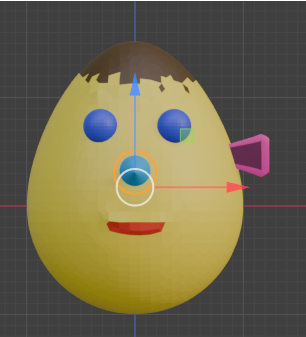
Now, go to the Data Tab of the Property Panel
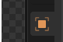
Duplicate the Ear Shift - D. Then Right click immediately after duplicating to keep the ear in place.
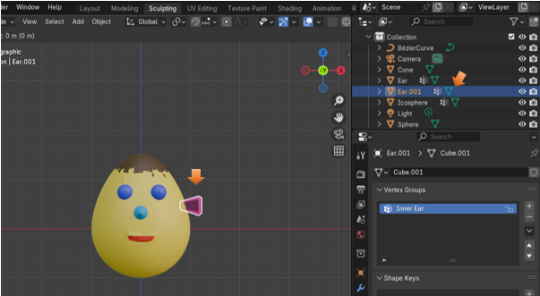
With that duplicated ear still selected.
You can also hit the N key to open the side panel in the right side of the inner viewport.
Filp the X Location in Location. You can flip the scale in either the X setting or the Y setting depending on which gives you the better result. For the Ear I found that flipping in the Y setting for Scale worked out the best.
Just put a negative sign in front of these numbers to flip them
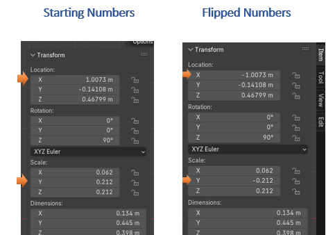
And here is the Ear Positioned Correctly after the Flip. Setting those numbers to negative numbers will just fling that ear into the correct position on the left side of the head.
COOL!
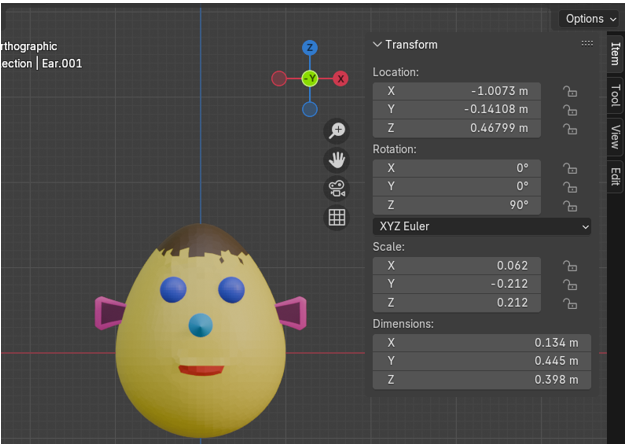
Move Pivot Point Back
Remember to Move your Transform Pivot Point back to the way it was originally once you have done the flip.
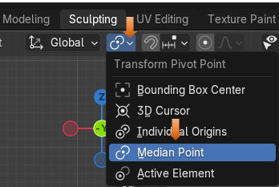
Well, that is all there is to mirroring the ear in Object mode. Next week, we will start reviewing Edit mode. The menus that may differ than what we have seen in object mode, and the different things that we can accomplish while we are there.